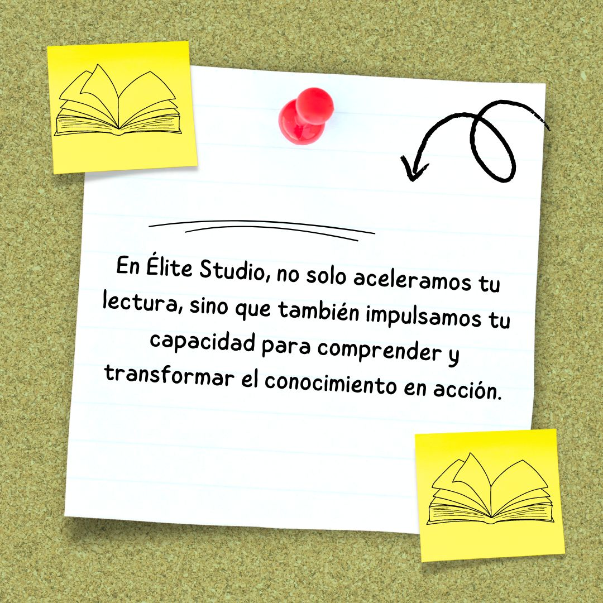
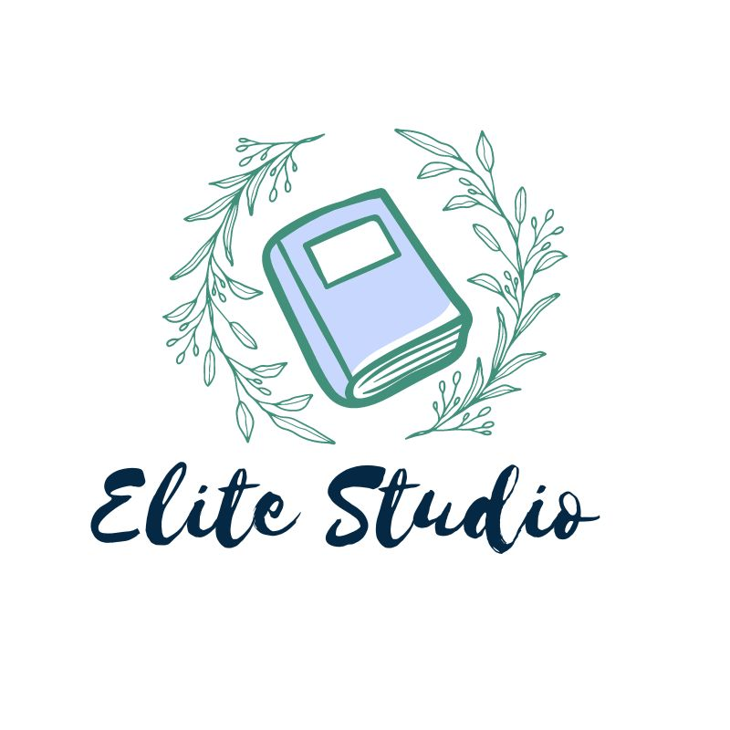

En Élite Studio, nos especializamos en formar estudiantes y profesionales a través de técnicas avanzadas que garantizan el máximo rendimiento intelectual. Nuestro programa abarca diversas áreas diseñadas para potenciar el aprendizaje y desarrollar habilidades cognitivas de manera integral.
Nuestras estrategias están fundamentadas en principios científicos de la metacognición, que permiten a los estudiantes no solo aprender más rápido, sino también planificar y evaluar su propio proceso de aprendizaje. Gracias a la técnica de flexibilidad ocular, los estudiantes pueden leer con una sola fijación a la línea. Además, retienen y comprenden más información a través del análisis textual avanzado y el entrenamiento de la memoria.
Nuestro enfoque incluye técnicas especializadas para que los estudiantes desarrollen una mayor capacidad de ampliación visual, permitiendo capturar la información rápidamente con una sola fijación a la línea.
Fomentamos la lectura eficiente de manera vertical, sin regresar ni perder tiempo, para que los estudiantes alcancen una velocidad óptima de lectura sin sacrificar la comprensión.
Nuestros estudiantes y profesionales también aprenden a analizar profundamente los textos que leen y a corregir su lenguaje, mejorando su léxico, ortografía y habilidades de oratoria.
Este curso es completo, ofreciendo además habilidades complementarias como oratoria, autoestima, debate y desarrollo de personaje.
Misión
Nuestra misión es empoderar a estudiantes y profesionales mediante técnicas avanzadas de lectura rápida y desarrollo metacognitivo. Nos dedicamos a proporcionar herramientas y conocimientos que optimicen el tiempo de estudio, fomenten la inteligencia mental y emocional, y preparen a nuestros estudiantes para enfrentar los desafíos de un mundo globalizado y competitivo.
Nuestro objetivo es proporcionar herramientas y conocimientos que optimicen el tiempo de estudio, asegurando que los estudiantes desarrollen habilidades clave como la inteligencia mental y emocional, fomentando la agilidad cognitiva y manteniendo su cerebro activo. Esto les permite mejorar su rendimiento académico e intelectual de manera integral.
En Élite Studio, promovemos el desarrollo de inteligencia emocional, permitiendo a los estudiantes manejar sus emociones de forma efectiva mientras avanzan en su aprendizaje. También fomentamos la independencia en el estudio, ayudando a que cada persona se vuelva más autónoma y eficiente en su proceso formativo.
Además, buscamos enriquecer el léxico de los estudiantes, fortaleciendo sus habilidades de oratoria y mejorando la corrección ortográfica. Estos elementos combinados permiten que nuestros alumnos sobresalgan tanto en el ámbito académico como en su vida personal y profesional.
Descripción del Programa
Nuestro programa está diseñado para ser semi personalizado, garantizando que cada estudiante alcance su máximo potencial. Abarca técnicas avanzadas de lectura veloz, análisis textual y desarrollo metacognitivo, proporcionando un enfoque integral que asegura un crecimiento tanto académico como cognitivo.
El programa de lectura veloz y desarrollo metacognitivo de Élite Studio combina teoría y práctica para que los estudiantes puedan aplicar inmediatamente lo que aprenden. Nuestras técnicas no solo aumentan la velocidad de lectura, sino que también mejoran la comprensión, el análisis profundo y la retención de información.
Componentes del Programa:
Cada estudiante comienza con una evaluación que permite identificar sus fortalezas y debilidades, tanto en velocidad de lectura como en comprensión y análisis.
En cuanto a las técnicas de lectura veloz, enseñamos desde la lectura visual rápida (skimming) hasta técnicas avanzadas en las que se desarrolla la flexibilidad ocular, lo que permite fijar la mirada en puntos clave del texto y comprender toda la información de manera eficiente.
También trabajamos en la reducción de la subvocalización para que los estudiantes no sientan la necesidad de "hablar" mentalmente mientras leen, lo que acelera significativamente su velocidad de lectura.
En cuanto al entrenamiento en visualización, nuestros estudiantes aprenden a crear imágenes mentales que facilitan la retención de información y mejoran la comprensión a largo plazo.
El desarrollo metacognitivo es parte fundamental de nuestro enfoque. Ayudamos a los estudiantes a planificar, monitorear y evaluar su propio proceso de aprendizaje para que se vuelvan más eficientes en sus estudios.
Finalmente, los estudiantes aplican estas técnicas a textos complejos de diversas disciplinas, mejorando su capacidad de análisis, síntesis y resolución de problemas.
Fundamentos de la Lectura Veloz
La lectura veloz no solo se trata de aumentar la velocidad de lectura, sino de encontrar un equilibrio perfecto entre velocidad y comprensión. A continuación, te presentamos las principales técnicas y estrategias que utilizamos para desarrollar una lectura eficiente y productiva.
Flexibilidad Ocular: Los estudiantes aprenden a fijar la mirada en puntos estratégicos del texto, capturando la información de manera más eficiente y mejorando la velocidad de lectura sin perder comprensión.
Lectura Vertical: Fomentamos una lectura continua y vertical, eliminando las regresiones oculares innecesarias. Este enfoque incrementa la fluidez lectora y permite avanzar rápidamente en el texto, optimizando el tiempo y la comprensión.
Desarrollo de Velocidad: Con prácticas guiadas, los estudiantes alcanzan una velocidad de lectura óptima, eliminando la subvocalización y mejorando la fluidez.
Análisis Profundo y Comprensión: Nuestros alumnos desarrollan habilidades para analizar y comprender los textos en profundidad, reteniendo más información incluso a altas velocidades.
Mejora del Lenguaje: A través de nuestras técnicas, ayudamos a mejorar el léxico, la ortografía y las habilidades de oratoria, optimizando el dominio del lenguaje.
Técnicas de Visualización: Los estudiantes aprenden a crear imágenes mentales para facilitar la retención de información a largo plazo, mejorando tanto la memoria como la comprensión.
Recursos y Herramientas

Existen múltiples recursos que pueden complementar el aprendizaje de la lectura veloz. A continuación, te presentamos algunos de los más efectivos que te ayudarán a desarrollar las habilidades clave para mejorar tu velocidad de lectura, comprensión y retención.
Lectura Visual: Aplicamos técnicas para expandir el campo visual, permitiendo captar múltiples palabras en una sola fijación ocular. Esto aumenta significativamente la velocidad de lectura, manteniendo una comprensión eficaz.
Fijación Ocular: Entrenamientos que enseñan a fijar la mirada de manera precisa en la línea de texto, eliminando la necesidad de retrocesos oculares, lo que mejora la fluidez y continuidad de la lectura.
Flexibilidad Ocular: Desarrollamos la capacidad de ajustar la mirada de forma estratégica, capturando la mayor cantidad de información posible en cada fijación, optimizando la velocidad de lectura.
Análisis Textual: Desarrollamos habilidades avanzadas para desglosar, analizar y comprender textos complejos, mejorando la capacidad de síntesis y comprensión profunda.
Mejora del Lenguaje: A través de ejercicios especializados, ayudamos a mejorar el léxico, la ortografía y las habilidades orales, elementos clave para una comunicación efectiva y profesional.
Estudios Científicos
Los estudios científicos validan la efectividad de las técnicas de lectura veloz que aplicamos en Élite Studio. Nuestro enfoque está diseñado para llevar a los estudiantes a un nivel de exigencia del 100%, alcanzando un rendimiento excepcional tanto en velocidad como en comprensión lectora. A continuación, te presentamos algunos estudios clave que demuestran los resultados de nuestra metodología.
Estudio de la Universidad de Minnesota (2016): Este estudio mostró que los participantes que utilizaron nuestras técnicas de lectura veloz experimentaron un incremento del 50% en su velocidad de lectura, manteniendo más del 90% de comprensión en textos complejos. Este resultado refleja el balance perfecto que buscamos en Élite Studio entre velocidad y comprensión, alcanzando un alto rendimiento.
Investigación de la Universidad de Cambridge (2019): En este estudio, los profesionales del ámbito legal que aplicaron nuestras técnicas mejoraron su velocidad de lectura en un asombroso 70%, logrando una comprensión del 95% en textos densos y complejos. La exigencia de nuestro programa permite a los estudiantes dominar grandes volúmenes de información con precisión y rapidez.
Meta-análisis del Journal of Educational Psychology (2021): Este análisis confirmó que los programas de lectura rápida pueden aumentar la velocidad de lectura en un 60% en promedio, sin comprometer la comprensión.
Beneficios del Programa

Dominar la lectura veloz no solo ahorra tiempo, sino que también mejora la productividad y la capacidad de retener información. Esto es particularmente útil en contextos académicos o profesionales donde la cantidad de material a leer es significativa.
A continuación, detallamos algunos de los principales beneficios:
Incremento en la Velocidad de Lectura:
Las técnicas enseñadas permiten aumentar significativamente la velocidad de lectura, sin sacrificar la comprensión.
Desarrollo de Habilidades Cognitivas y Metacognitivas:
Los estudiantes aprenden a desarrollar la agudeza mental y a planificar, monitorear y evaluar su propio proceso de aprendizaje, mejorando la capacidad de análisis y síntesis.
Productividad Aumentada:
Al leer y comprender más rápido, los estudiantes pueden procesar más información en menos tiempo, lo que resulta en una mayor productividad tanto en el ámbito académico como profesional.
100% de Comprensión:
Con la práctica constante y la aplicación correcta de nuestras técnicas, los estudiantes alcanzan un nivel de comprensión del 100%, garantizando que no solo lean más rápido, sino que también retengan y comprendan todo el contenido.